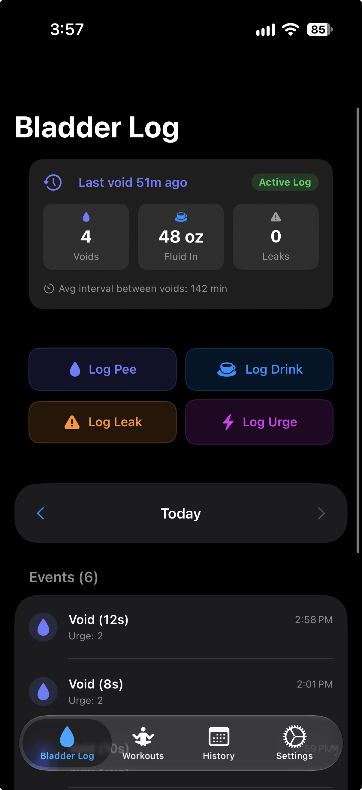
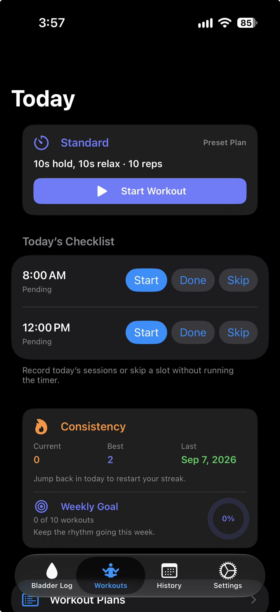
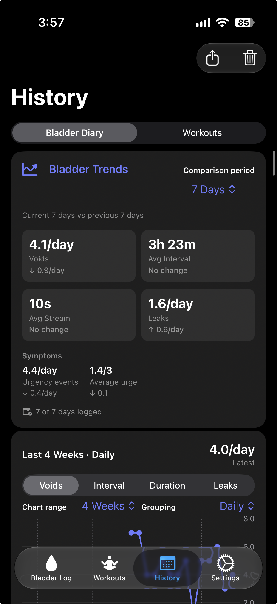
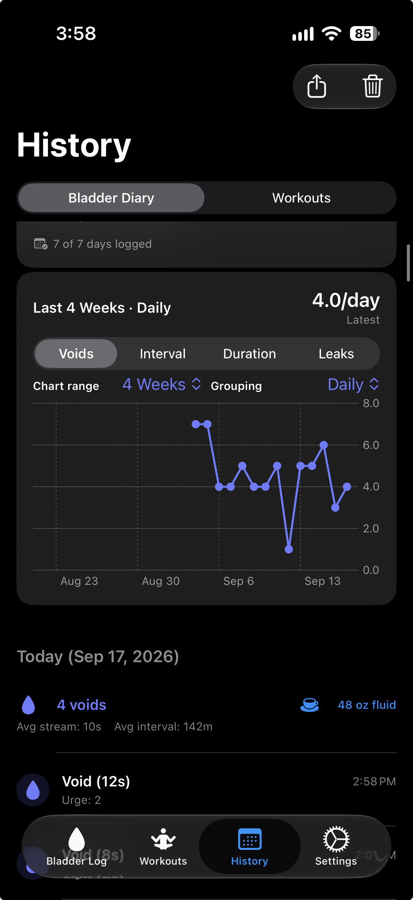
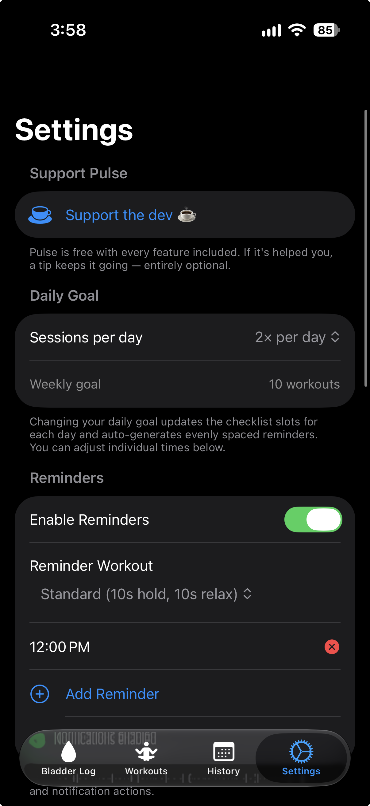

Personal bladder diary
Log voids, stream duration, drinks, urgency, and leakage in a few taps. Edit or delete entries whenever you need to.
Private by design
Pulse combines guided pelvic-floor workouts with a personal bladder diary, trends, reminders, and an Apple Watch companion. Your app data stays on your devices unless you choose to export it or use an Apple system integration.

One app, two routines
Pulse keeps bladder logging and pelvic-floor exercise in one focused, local-first app.
Log voids, stream duration, drinks, urgency, and leakage in a few taps. Edit or delete entries whenever you need to.
Review averages and period-over-period changes for void frequency, intervals, stream duration, leaks, and urgency signals.
Follow hold-and-relax sessions, build a routine with reminders, and track workout history and consistency.
Start workouts and record supported bladder events from your wrist, including when your iPhone is temporarily unavailable.
Local-first privacy
Pulse has no developer-operated backend, advertising, analytics, or tracking. Workout history and bladder-diary records are stored locally using Apple system frameworks.
Apple Health sync is optional and writes completed workouts only. Exports happen only when you choose to share them.
Read the privacy policyInside Pulse




Need a hand?
The support guide covers logging, trends, workouts, Watch sync, reminders, Health access, exporting, and deleting your data. If Pulse has been useful, you can also support its development with a coffee